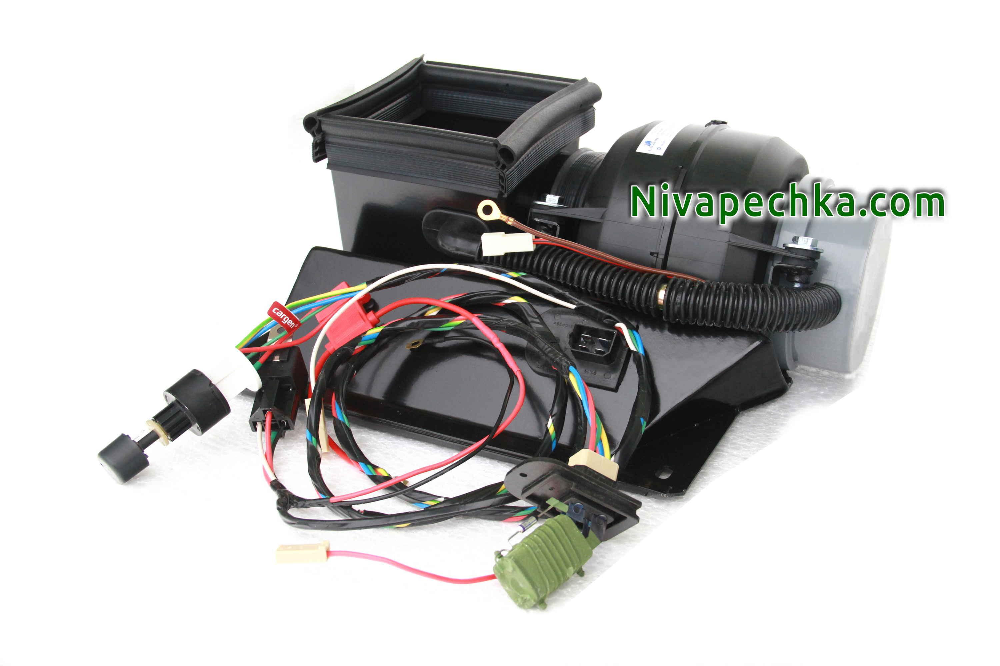

Устанавливаем вентилятор 2108 в Ниву своими руками в окрашеный корпус МАКСИ КОМПАКТ без подсветки.
Обновлено:
Комплект начального уровня МАКСИ КОМПАКТ без подсветки позволяет быстро и без хлопот внедрить улитку с вентилятором 2108 в любую Ниву. Подключить вентилятор 2108 в Ниве можно с помощью входящего в комплект УСИЛЕННОГО ЖГУТА на ЧЕТЫРЕ СКОРОСТИ вентилятора.

Переключатель печки на четыре скорости мотора 2108 в Ниве из этого комплекта поставляется без подсветки. В комплекте идет подробная пошаговая инструкция
по установке вентилятора 2108 в Ниву и подключению электрического жгута к электропитанию автомобиля. Все соединения в УСИЛЕННОМ ЖГУТЕ на
ЧЕТЫРЕ СКОРОСТИ вентилятора Нивы выполнены на штекерах. Поэтому для его подключения вам не надо резать никаких проводов в Ниве.
Нива печка 2108 окрашеный корпус МАКСИ КОМПАКТ без подсветки